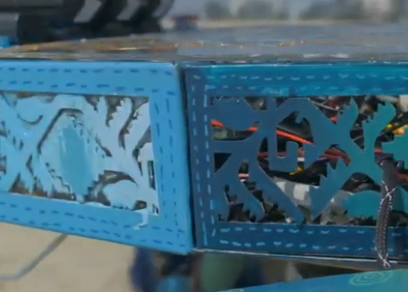

The Hypersonic chassis employs a segmented modular framework integrated with a flipping mechanism that enables complete separation of control electronics from high-power systems. This architecture dramatically improves accessibility during mission debugging, battery replacement, and emergency maintenance. The modular design reduces assembly complexity, enhances internal airflow, and simplifies cable routing. The flipping interface allows operators to access critical boards without disassembling the entire rover structure, reducing operational downtime and enabling faster troubleshooting in field conditions.
Motivation & Constraints:
The previous rover required long and error-prone disassembly processes to access core electronics, often delaying field tests. The new objective was to cut access time by at least 40% while keeping the overall chassis weight under strict limits. The challenge was to maintain structural integrity with fewer fasteners and more modular joints, all within a tight machining budget and a five-month build schedule.
Results & Evaluation
The flipping mechanism reduced electronics access time from 25 minutes to under 12 minutes, exceeding the goal by a wide margin. The modular assembly improved heat dissipation by roughly 15% and lowered overall maintenance cycle time. The chassis maintained structural rigidity during stress testing; however, panel alignment during rapid closing still required fine adjustments, suggesting the need for future hinge calibration improvements.
My Contributions:
Learnings:
Reflection (What didn’t work & next iteration):
Initially, the flipping mechanism caused slight misalignment in the electronics tray when repeatedly opened during stress tests. This taught me to design joint tolerances more conservatively and incorporate self-aligning guide rails. Future iterations will include integrated alignment pins to eliminate closing drift.
{kind=link}
{kind=link}
{kind=link}